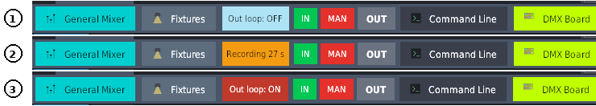
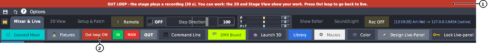

For: FullPlayer
Work in the program during a show without the audience seeing it. Out loop records a few seconds of what the running buttons send, then the DMX interfaces (USB and Art-Net) play that recording again and again - the stage keeps its show - while the program is free: change buttons, use the Fixture Control and the generators, make sequences, as when no show runs. LumiDMX 3D, Stage View and the DMX Board show your work, not the loop.
It takes the place of Freeze on the function bar when Setup & Patch > Option > Replace Freeze with Out loop is ticked (off at first; see The Option tab).

| 1 | Out loop: OFF (light blue, as Freeze): the interfaces send the program's output, as always. |
| 2 | Recording 27 s (orange): pressed, it records one full turn of the longest running button - whole turns, 8 seconds at least, 30 at most - and counts down. The show goes on normally. Press it again to cancel: nothing changes. |
| 3 | Out loop: ON (red): the interfaces play the recording in a loop. You can work. |

| 1 | The red band on top of the window, while the loop plays: how long the loop is, and that the 3D and Stage View show your work. |
| 2 | Press Out loop: ON to go back to live. |
Pressing Out loop: ON does, in this order:
stopAllObjects - every button stops;ResetAll - every channel at 0 %;runObject starts them: a Step on Remote button goes back into the Remote, on Play;So after Out loop only the buttons run, as they ran before it. The moving heads go straight to their new place; nothing goes dark. What you saved meanwhile stays: sequences made with Generate, steps, new buttons, imports.